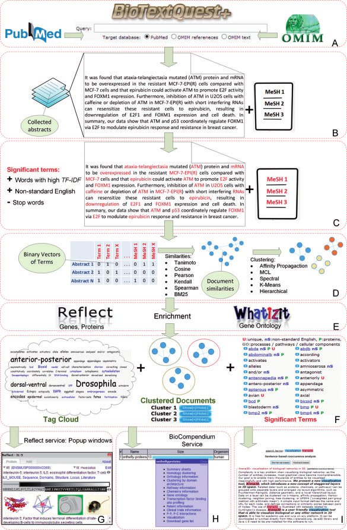

BioTextQuest is a tool to help you discover novel concepts in biomedical literature.
It accepts a PubMed or an OMIM query. In the case of OMIM, either the OMIM text will be processed or the PubMed articles referenced in the OMIM text (OMIM references). The collected articles or text are then clustered in meaningfull clusters. The most important terms of each cluster are presented in a tag cloud format and enriched by exterior services.
You start your analysis by selecting the Start tab
From the following dropdown menu you can select your theme: